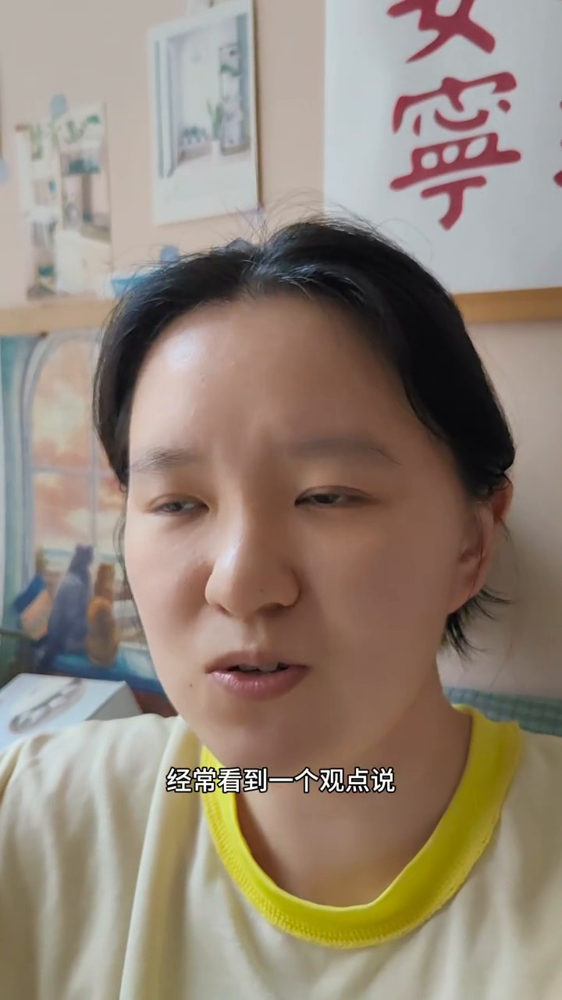
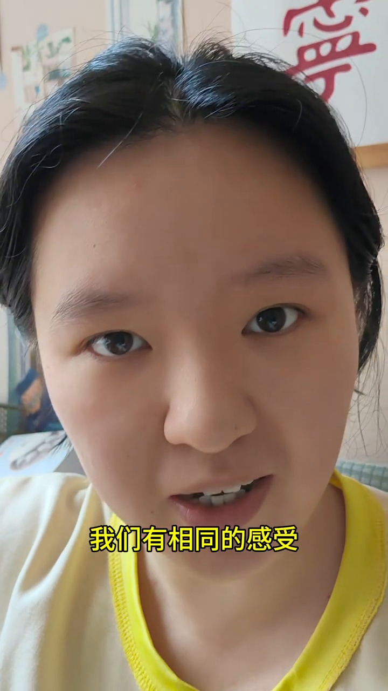
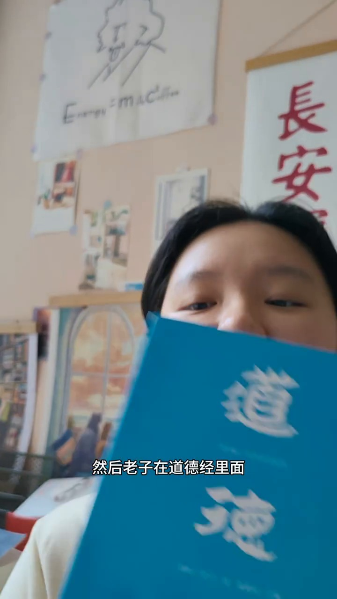
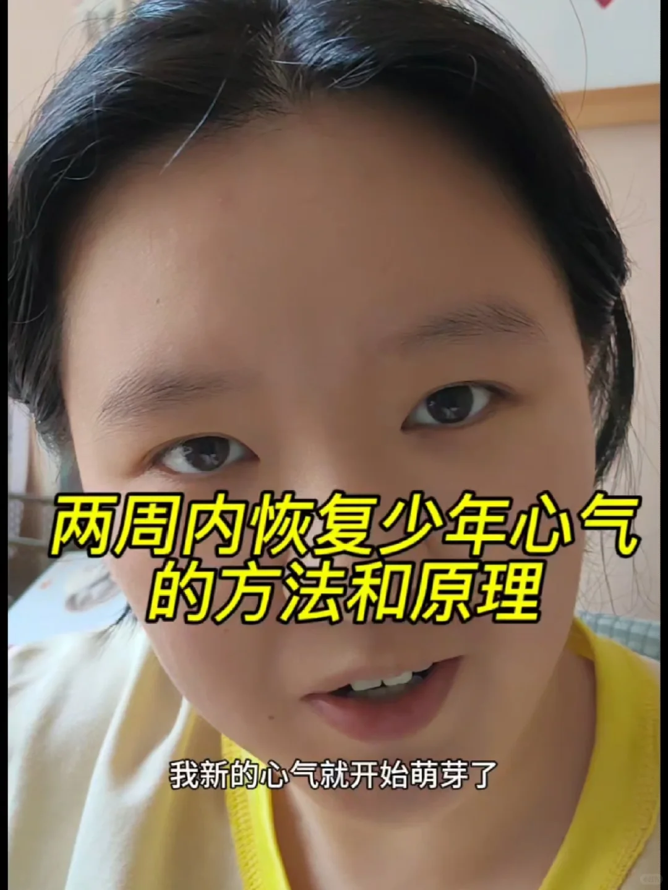
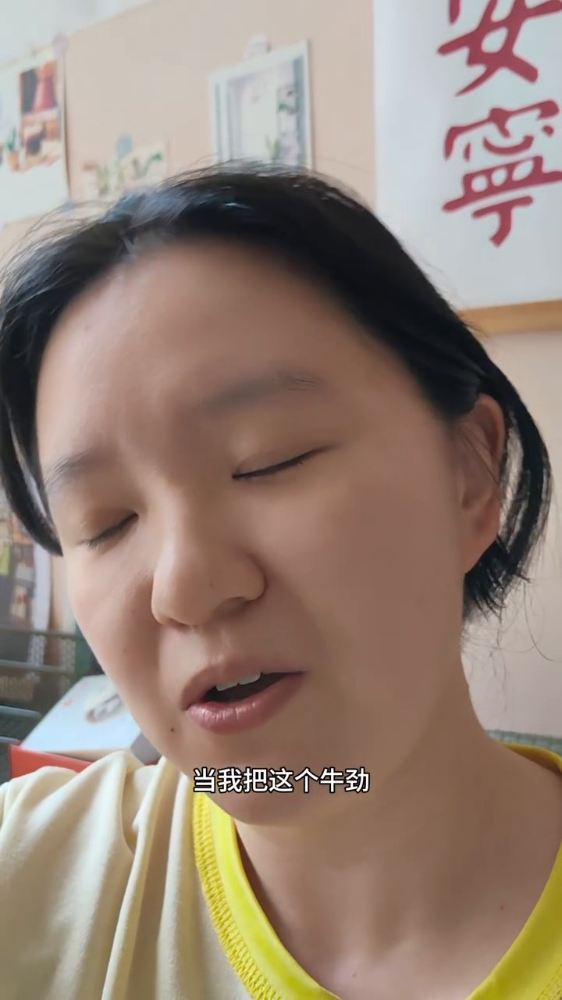
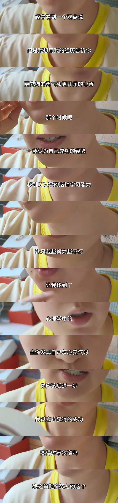

周小满《我是怎么在心灰意冷的谷底，找回少年心气的》（2025-07-03 发布，时长 02:33）的完整归因分析：为什么点赞数超过作者粉丝量、收藏数超过粉丝数；原片 11 段逐句时间轴；以及一套可直接套用的翻拍选题方向与脚本骨架。
在回答"为什么 2.8 万赞"之前，先把最核心的判断说清楚：这个视频没有提供任何新知识，它做的是一次情绪转译。
观众真实的痛点不是"我不知道该怎么努力"，而是 "我已经努力过了，而且失败了，我不知道自己还该不该继续。"
这条视频做的唯一一件事，是把"我废了"这个自我否定，重新命名成 "我过去成功的那套方法正在让我的思路变得过于狭窄"——同一段痛苦，前者是判决，后者是诊断。
判决让人闭嘴，诊断让人行动。一个 2.8 万赞的视频，本质是一次成功的情绪转译。
这四个数字连起来读，指向一个明确判断：这是一条"被收藏的比被点赞的还多"的内容。纯情绪型内容（共鸣、励志、审美）通常是点赞远大于收藏；而方法论型内容会反过来——观众是来"存下来回头照着做"的。这个比例差，说明视频交付的不只是情绪安慰，还有一套可复述的框架。
所以本报告的结论可以浓缩成一句：它把一个无法言说的耻辱感（"我没劲了"），翻译成了一个可以被命名的认知机制（"心理定势"），再交出一个今天就能做的最小动作。观众点赞，是因为被说中；观众收藏，是因为拿到了方法；观众评论，是因为话题本身带电。
以下所有数字均取自笔记页公开元信息与博主主页展示值，未做任何推测性修正。
| 字段 | 公开值 | 解读 |
|---|---|---|
| 标题 | 我是怎么在心灰意冷的谷底，找回少年心气的 | 第一人称 + 时间地点（谷底）+ 结果（找回心气）。三个承诺一次给足，但没有任何"教你"式的预设 |
| 点赞 / 收藏 / 评论 | 2.8 万 / 1.5 万 / 269 | 收藏占点赞 53.6%，且绝对值 1.5 万 > 粉丝 1 万+[1] |
| 时长 | 02:33（153.3 秒） | 小红书口播的"完播友好区"上限附近；超过 3 分钟完播率显著下滑 |
| 话题标签 | #心气 #个人成长 #少年心气 #自我认知 #自我成长 #认知觉醒 #大脑 #深度思考 #自信心 | 9 个标签里 6 个是心理/成长词，精准锁定"认知觉醒"人群池 |
| 发布时间 | 2025-07-03 编辑 | 暑期初期，"毕业/入职/求职"周期起点，焦虑浓度最高的时间窗 |
| 作者 | 周小满（小红书号 5353725386） | 简介："那个我对我说～有生命力有爱的活着～博主首创'四人圆桌'决策系统" |
| 账号基线 | 1 万+ 粉丝 / 1 万+ 获赞与收藏 / 7 关注 | 主页展示值为平台"区间显示"，但足以确认：这是一条超常发挥的单条笔记[2] |
收藏数（1.5 万）大于作者粉丝数（1 万+），意味着有大量"非粉丝被收藏"。在小红书的分发逻辑里，收藏是一个强于点赞的深度消费信号（意味着"我打算再看一遍/我要去做"）。这条视频很可能被推荐机制打上了"优质方法论"标签，从而获得了超出粉丝池的公共推荐流量。
点赞从来不是单一原因的结果。这六个机制每一个都在独立地制造一次"想点赞"的冲动，叠加后形成 2.8 万。
视频第 0 秒没有自我介绍、没有"大家好"，直接抛出一句对撞式立论：
"经常看到一个观点说 / 心气是不可再生资源 / 但是我想用我的经历告诉你 / 它是可以再生的 / 而且你可以拥有比之前 / 更充沛的勇气和更开阔的心智"
这里的手法是"先立一个所有人都默认的靶子，再当场击穿它"。"心气是不可再生资源"是 2024–2025 年内耗赛道里最主流的一句丧话，几乎每个平台都在复读它。一条短视频主动与整个话语场的主流共识对撞，第一秒就制造了"她凭什么这么说"的停留。
更关键的是评论区把这个张力接住了。获 1000+ 赞的头条评论直接替她把权力关系挑明：
"说心气是不可再生的人都是为了让人顾影自怜然后继续萎靡，其实觉得这样的人挺可怕。"
观众不只是在点赞这条视频，他们是在用点赞替视频完成论证。这意味着这条视频自带一个可被站队的命题——评论不是附带的互动，而是内容的第二层。

这是整条视频技术含量最高的一段。00:50–01:03 是"谷底"——心气被磨光、什么都不想干、无聊时翻《道德经》、看三年前买的心理学书。原片在此处点明：
"就是这种无所事事的状态，让我找到了 / 为什么做不好的根本的原因。"
然后 01:03 起，她没有说"你要加油"，她给了一个专业名词：心理学中的"认知过程的心理定势"，并把它转成一句可以直接拿去问自己的问题——
"当你发现自己灰心丧气时 / 你应该后退一步 / 并且问自己 / 我过去所获得的成功 / 正在让我的思路变得过于狭窄吗？ / 我之前勤奋努力的这个 / 获得成功的这个心理定势 / 现在反而让我陷入了绝境。"
这一步做的是"去道德化"。在此之前观众的自我认知是"我不够努力 / 我太脆弱 / 我废了"——这是对人的判决。而"定势失效"是对策略的诊断。"我这个人不行"是无法改变的，"我这套打法过时了"是可以更新的。痛苦一旦被命名，就从"我是谁的问题"变成了"我遇到了什么问题"，而后者才有解。
心理学概念还自带两个附加收益：权威感（看起来有依据）和可传播性（观众可以把它复述给别人听，而复述就是二次传播）。
很多共鸣型内容止步于"我懂你"，观众点头然后划走。这条视频走完了从"被说中"到"拿到东西"的完整链路，而且每一环都咬合：
其中第 6 步是整条视频的"可交付物"。它不是"你要更努力"这种无法执行的口号，而是一句有画面感的、可以被复述的台词："感谢你帮助我到达了今天的这个位置，你做得很好，但是现在是时候让我们一起来推翻它了。"这句话有对象（那个旧的自己）、有感谢、有动作，念出来就能对着自己做一遍——它是一句仪式。
这条视频的美术执行非常克制，但每一样东西都在重复同一件事。全片单机位、固定机位、怼脸近景、无 B-roll、无场景切换（帧差分析确认），但可变量被严格控制：
封面标题是黄字黑描边；正文字幕为白字，关键句切换为黄色高亮（"我们渴望变得更好""就是你以为的""和现实之间的鸿沟的不断的修正""认知过程的心理定势"）；连作者本人穿的衣服都带亮黄领口。观众的潜意识里形成一个条件反射：看到黄色 = 这里有东西要记住。
米色墙、红色书法字画（"安宁""長安喜樂"）、照片墙、爱因斯坦 E=mc² 手绘海报。全片没有任何场景变化，视觉信号始终在说同一件事：这是一个人长期待着的、安静思考的地方。背景不是装饰，是人设。
这条设计的价值在于：它让一条纯口播在信息密度为零的条件下，仍然有视觉记忆点。在满屏 B-roll 和花字特效的内容流里，一条几乎没动过机位的视频反而更容易被记住。


02:26 是全片最后一个记忆点。她把《道德经》举到镜头前，说"除了我看了这个心理学，老子在道德经里面也告诉过我们这个道理了"。这个动作解决的是口播视频最致命的信任漏洞——你凭什么。
全片她没有讲过一次"我认为"、"大家应该"，全部是第一人称经历陈述；而结尾举起书，等于给整段自述盖了一个物理印章。这一手把"个人分享"升级成了"我真的做过功课"。
269 条评论里，被顶到前面的内容分三类，每一类都在承担不同的传播功能：
| 评论类型 | 代表 | 互动量 | 传播功能 |
|---|---|---|---|
| 立场站队 | "说心气是不可再生的人都是为了让人顾影自怜然后继续萎靡，其实觉得这样的人挺可怕" | 1000+ 赞 | 把"心气是否可再生"变成一个可辩论的公共议题，抬升算法侧的评论权重 |
| 专业补充 | "心气缺失是经历过努力无效的习得性无助。恢复的办法是找到一件努力有效的事情，恢复掌控感。" | 1000+ 赞 | 观众自发补上学理（习得性无助），替视频完成可信度加固——视频没说的，被评论区补上了 |
| 批评 / 抬杠 | "感觉这个视频说得太乱，缺点条理性，让人看不懂" / "像听领导讲话，非常空洞" / "说的太抽象了" | 10+ / 6 / 10+ 赞 | 争议本身是高互动信号。而且这批批评精准暴露了翻拍者最容易踩的坑（见第 10 节） |
| 索取资源 | "什么书呢" → 有观众给出《心理学与生活》（理查德·格里格 / 菲利普·津巴多） | 5 / 赞 | 把"我需要这本书"变成一条可交付的评论，同时完成书单二次传播[1] |
最高质量的那条专业补充评论值得单独看：
"如果多次努力无效，大家不要硬逼自己，放慢速度下来分拆目标，或者重新拟定目标。千万不要硬来（越努力越完美主义的越硬来），不但是因为 burnout，而是反复失败会重塑你的神经链路……一旦失败链路被强化，习得性无助就形成了，一遇到挑战，你的大脑第一时间就是逃跑信号，后期要花很长时间去修复。目标在那里不会跑，把自己当个人。"
这条评论在做什么？它在用视频没敢讲的神经机制语言，补上视频最薄的那一环——"到底是为什么"。一条 269 条评论的笔记能跑到 2.8 万赞，很大程度是观众自己帮视频写出了最好的部分。这也直接给翻拍者一个启示：视频要留一个"可以被补完"的缺口，缺口才会变成评论，评论才是二次推流的燃料。
flowchart LR A["封面大字
两周内恢复少年心气的方法和原理"] --> B["11秒反常识立论
心气可以再生"] B --> C["身份前置
28岁北漂·大厂策略策划"] C --> D["失效事件
越努力越不行"] D --> E["谷底细节
什么都不想干"] E --> F["归因命名
认知过程的心理定势"] F --> G["最小动作
允许慢下来·对旧定势说谢谢"] G --> H["结果承诺
心气会反弹回来"] H --> I["升华
它来自于心，不来自于理性"] I --> J["权威背书
举起《道德经》"] J --> K["收藏 1.5万
照着做"] J --> L["评论 269
补充·争论·求书"] L --> M["互动率上升
推荐池扩大"] M --> A
这是整个问题里最重要的一问。答案不是"如何努力"，而是"努力过了却看不到结果之后，动力系统该怎么重启"。
把原片 153 秒里的每一句对照到观众心理，可以拆出五层痛点。注意它们是从外到内递进的——视频的叙事顺序，正好就是痛点的剥开顺序。
| 层级 | 痛点 | 观众的心里话 | 原片位置 | 原片如何接住 |
|---|---|---|---|---|
| L1 | 努力无效的习得性无助 | "我不是没努力，我是越努力越不行。" | 00:36–00:50 | 给出原句"就是我越努力越不行，然后陷入了一种无可奈何的循环当中"——不美化、不加戏，先承认失控 |
| L2 | 身份落差：我的骄傲失效了 | "我引以为豪的学习能力和拼搏向上的劲头，怎么就不好用了？" | 00:22–00:50 | 先给足高光（28 岁一个人飞北京、大厂策略策划部、同事都 35+），再让高光崩塌。落差必须先被建立，崩塌才有分量 |
| L3 | 绝望的自我定义 | "心气是不可再生的，我这种人已经用完了。" | 00:00–00:11 | 开场即击穿。评论区 1000+ 赞直接替观众宣战："说心气不可再生的人都是在让人顾影自怜" |
| L4 | 无法言说的羞耻感 | "没劲了"这三个字说不出口，更不能在朋友圈说。 | 00:50–01:03 | 用行为细节代替情绪词：什么都不想干、无聊时翻《道德经》、翻三年前买的心理学书。观众在细节里认出自己，而不用承认自己"抑郁" |
| L5 | 想要解释，而不是想要激励 | "我不想被灌鸡汤，告诉我到底怎么回事。" | 01:03–01:41 | 给专业名词（心理定势）+ 给可执行动作（后退一步 / 对它说谢谢 / 一起推翻它）。评论区"像听领导讲话，非常空洞"这条差评，反过来证明市场要的是解释不是口号 |
这一代观众的痛点已经从"我不够努力"变成了"我努力过了，但好像努力也没用了"。前者缺方法，后者缺意义与出口。周小满的选题精准踩在"后者"上——因为前者满地都是方法，后者几乎无人认真对待。
因为它同时解决了三件事，缺一不可：
这就是为什么评论区最高赞的补充评论也是同一个方向——观众来这里，是为了拿到一个可以说出口的解释。
以下时间轴基于全片语音转写与字幕逐帧 OCR 交叉校对得到，错字已按画面人工修正。
| 时间 | 时长 | 段落 | 关键内容（画面字幕） | 叙事功能 |
|---|---|---|---|---|
| 00:00–00:11 | 11s | 反常识钩子 | "经常看到一个观点说 / 心气是不可再生资源 / 但是我想用我的经历告诉你 / 它是可以再生的 / 而且你可以拥有比之前 / 更充沛的勇气和更开阔的心智" | 撕开注意力；建立全片命题 |
| 00:11–00:22 | 11s | 人设前置 | "我跟你分享一下我的经历吧 / 我是一个自驱力很强的牛马 / 28岁一个人从成都飞到了北京 / 面试了行业前三的品牌公司的 / 策略策划部" | 用"牛马"自嘲降低距离感；用履历建立可信度 |
| 00:22–00:36 | 14s | 高光与骄傲 | "我们同部门的同事 / 年龄至少都在35岁以上 / 那个时候我认为自己成功的经验 / 就是我引以为豪的 / 这种学习能力和这种拼搏向上的 / 一种干劲" | 把"牛劲"具体化，为后续崩塌埋反差 |
| 00:36–00:50 | 14s | 转折失效 | "但是当我把这个劲用在了三农自媒体上 / 它失效了，它没有用 / 就是我越努力越不行 / 然后就陷入了一种 / 无可奈何的循环当中" | 第一次下坠；"越努力越不行"是全片第一个情绪低点 |
| 00:50–01:03 | 13s | 谷底 | "然后心气被磨得差不多了 / 就什么都不想干了 / 然后无聊的时候 / 翻翻《道德经》 / 然后看看自己三年前买的 / 心理学的书 / 就是这种无所事事的状态 / 让我找到了 / 为什么做不好的根本的原因" | 最低点；用行为细节替代情绪形容词；主动抛出"原因"钩子 |
| 01:03–01:20 | 17s | 认知命名 | "心理学中的 / 认知过程的心理定势写到 / 当你发现自己灰心丧气时 / 你应该后退一步 / 并且问自己 / 我过去所获得的成功 / 正在让我的思路变得过于狭窄吗 / 我之前勤奋努力的这个 / 获得成功的这个心理定势 / 现在反而让我陷入了绝境" | 全片支点。把自我否定改写为认知诊断，完成去道德化 |
| 01:20–01:41 | 21s | 方法动作 | "在这个（心气丧失）过程中你要允许 / 自己慢下来 / 允许自己后退几步 / 去发现去看见 / 你失效的那个心理定势 / 你可以对它说 / 感谢你帮助我到达了今天的这个位置 / 你做得很好 / 但是现在是时候让我们一起来 / 一起推翻它 / 去超越以前的那个原动力 / 超越现在的自己" | 可交付物。交付一个能对着自己念出来的仪式性动作 |
| 01:41–01:46 | 5s | 结果承诺 | "你就会发现你的心气 / 会以更强大更稳定的状态 / 反弹回来" | 把"心气"从一次性资源改写成可回弹的弹性指标 |
| 01:46–02:04 | 18s | 新的日常 | "当我认知到了这一点 / 我新的心气就开始萌芽了 / 这一次我答应自己要去享受村里的生活 / 记录的话它只是我的一种分享 / 我当下的感受和感觉才是最重要的 / 这也是我喜欢农业的原因 / 就是因为它有让我看得见 / 又摸得着的生命力和惊喜" | 用具体生活细节兑现承诺；"看得见摸得着"是全片最治愈的意象 |
| 02:04–02:26 | 22s | 价值升华 | "视频数据的意义 / 它仅仅在于我们有相同的感受 / 我们渴望变得更好 / 它来自于心，不来自于理性 / 其实心气的丧失 / 就是你以为的 / 和现实之间的鸿沟的不断的修正 / 你每碰一次壁 / 然后允许自己后退几步的做法 / 其实都是你在刷新认知 / 然后获得像质变一般的成长的这么一个路径" | 把个人故事升维为共同处境；这一段是点赞峰值区 |
| 02:26–02:33 | 7s | 权威背书 | "其实除了我看了这个心理学 / 老子在道德经里面 / 也告诉过我们这个道理了"（举起实体书入镜） | 实物证据收口；留一个可被截取的结尾画面 |
反常识立论（10s）→ 身份前置（25s）→ 失效事件（14s）→ 谷底细节（13s）→ 认知命名（17s）→ 最小动作（21s）→ 结果承诺（5s）→ 新的日常（18s）→ 价值升华（22s）→ 权威背书（7s）
总时长控制在 150–155 秒；前 11 秒必须完成立论；认知命名与最小动作两段合计不得短于全片的 25%——这两段决定收藏量。
同一套脚本换一种拍法，完播率可以差三倍。以下六项是原片在形式上做对的事，也是最容易照搬的部分。
| 维度 | 原片做法 | 为什么有效 |
|---|---|---|
| 机位 | 单机位、固定机位、全程怼脸近景，无 B-roll、无场景切换（帧差分析确认） | 观众视线无处可逃，只能听你说话。对纯口播来说，去掉一切干扰就是最大的设计。风险：需要极强的表达力兜底 |
| 景别 | 头部占画面 90% 以上 | 把"表演空间"压缩到最小，逼出真实。观众读的是微表情，不是构图 |
| 光线 | 室内自然光，暖调、无硬阴影 | 和米色墙、黄色字幕构成统一的暖色温，弱化"被拍摄"的痕迹 |
| 背景 | 米色墙 + 红色书法（安宁/長安喜樂）+ 照片墙 + 爱因斯坦 E=mc² 手绘海报 | 背景是人设的一部分。一个长期思考的人的房间，本身就是论点 |
| 服装 | 米白 T 恤 + 亮黄领口 | 与黄色字幕同源，把视觉系统统一到"心气"这个符号上 |
| 字幕 | 白字黑描边为常态；关键句切换黄色高亮；一句一屏，句长 8–14 字 | 静音也能看懂（小红书大量场景是静音刷）；高亮即天然的视觉锚点 |


标题给的是情绪故事（"我是怎么在心灰意冷的谷底，找回少年心气的"——我，一个真实的人，从谷底爬出来了）；封面给的是方法承诺（"两周内恢复少年心气的方法和原理"——而且还带时间范围"两周内"）。
两者叠加，点击率被最大化。但注意风险：封面承诺了"两周内"，如果视频内容兑现不了（多数翻拍者做不到），评论区会出现"说的太抽象了""没什么用"这类差评。翻拍时要么兑现它，要么改成不含具体时长的表达。

翻拍不是复述"心气"，而是复用选题结构：同样的骨架，换一个领域，换一个属于你自己的失效事件。
一个人群共有的处境 × 一个反常识的认知翻转 × 一个可命名的机制 × 一个今天就能做的最小动作
缺"可命名的机制"就没有收藏，缺"最小动作"就没有实用价值，缺"反常识翻转"就没有完播。
| # | 选题方向 | 目标人群 | 可命名的机制 | 一句话钩子 |
|---|---|---|---|---|
| 01 | 考证 / 考公 / 考研连续失败后的重启 | 二战三战考生 | 沉没成本 / 目标漂移 | "我考了三年才明白，不是题不会，是我在用高中生的方法做研究生的题。" |
| 02 | 裸辞后第一个月的心慌 | 裸辞期的职场人 | 心理安全感 / 确定性依赖 | "我以为我在攒钱，其实我在攒不敢动。" |
| 03 | 35+ 转行：从大厂到摆摊/种地/手艺 | 中年转型者 | 身份定势 / 能力幻觉 | "我引以为豪的十年经验，在新赛道上一天都没用上。" |
| 04 | 读完 100 本书却什么都没变 | 自我成长爱好者 | 行动缺失 / 知识幻觉 | "我不是缺方法，是把'看方法'当成了'做方法'。" |
| 05 | 社恐 / 不会拒绝的人 | 讨好型人格 | 边界缺失 / 间歇性强化 | "不是我不合群，是我一直在等别人替我开口。" |
| 06 | 被 AI 替代恐惧 | 互联网/创意从业者 | 工具性价值幻觉 | "我怕的不是 AI，是发现我一直在做 AI 能做的事。" |
| 07 | 全职妈妈 / 育儿期的自我消失 | 妈妈群体 | 角色过载 / 自我剥离 | "孩子三岁了，我突然发现我连自己喜欢什么都要想一想。" |
| 08 | 回不去的小城 / 北漂离开后 | 返乡青年 | 参照点重置 | "我回来看了一次北京，发现不是我变了，是我的参照点变了。" |
| 09 | 身体先垮、意志先垮 | 健身/慢病人群 | 身心同源 / 神经耗竭 | "我的意志力不是变差了，是它真的被用完了。" |
| 10 | 把"躺着"合法化的一支 | 躺平/休整中的人 | 恢复性间歇 / 损耗管理 | "我不是躺平，我是在等一个值得我重新启动的东西。" |
这一节是可以直接照做的操作清单。
这是把原片结构抽象出来的填空模板。黄色高亮处替换为你自己的内容。
示范选题——《我是怎么在被裁员和自我怀疑的双重打击里，把心气重新攒回来的》（受众：23–32 岁职场人）。注意结构完全复用，但每段的素材都是新的。
| 类型 | 公式 | 示例 |
|---|---|---|
| 标题 | 我是怎么 + [极端处境] + [转折动作] + 的 | "我是怎么在心灰意冷的谷底，找回少年心气的" |
| 封面大字 | [时间范围/数量] + 恢复/解决 + [对象] + 的方法和原理 | "两周内恢复少年心气的方法和原理" |
| 封面小字 | 我 + [当下状态] + 了（正在发生的实感句） | "我新的心气就开始萌芽了" |
| 结尾金句 | [名词]的丧失/获得，就是你 + [你以为的] + 和现实之间的鸿沟的不断的修正 | "心气的丧失，就是你以为的和现实之间鸿沟的不断的修正" |
| 评论区钩子 | 主动留一条"我承认它不完美"的问题 | "这段我自己回看也觉得有点绕，你们最想听我展开哪一段？" |
这条视频的评论区同时给出了最诚实的批评。把它们翻译成操作建议：
差评里出现频率最高的两个词是"乱"和"抽象"。对应的解法只有一个：每说一个抽象概念，后面必须紧跟一个具体画面。原片说"心理定势"，下一句就是"我过去勤奋努力的这个获得成功的这个心理定势，现在反而让我陷入了绝境"；说"心气回弹"，下一句就是"答应自己去享受村里的生活""看得见摸得着的生命力和惊喜"。抽象是骨架，画面是血肉，缺了血肉，观众就说"听不懂"。
2.8 万赞的答案是：它把"努力无效"从一句判决，变成了一次可命名的认知故障，并顺手递上一个当天就能做的小动作。情绪转译提供了点赞，可命名的机制提供了收藏，天然带电的命题提供了评论。三者叠加，才有了这个超出账号粉丝量两倍以上的单条成绩。